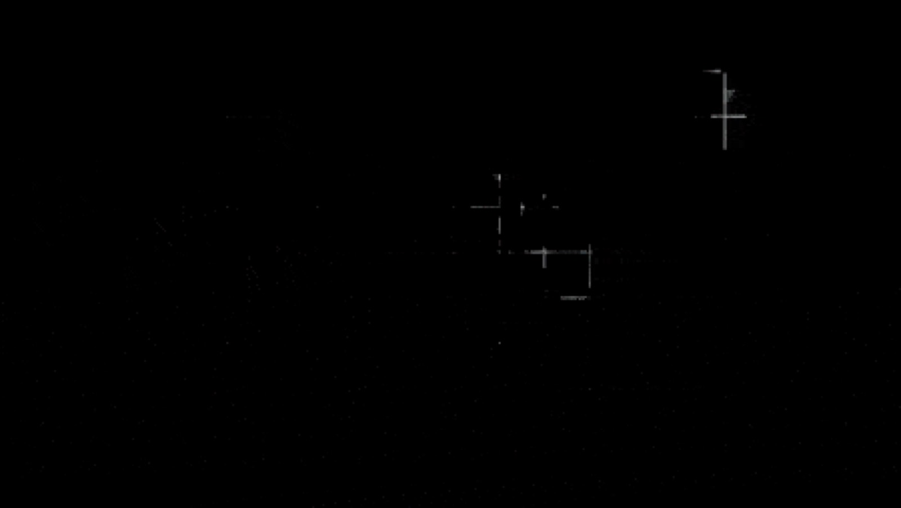
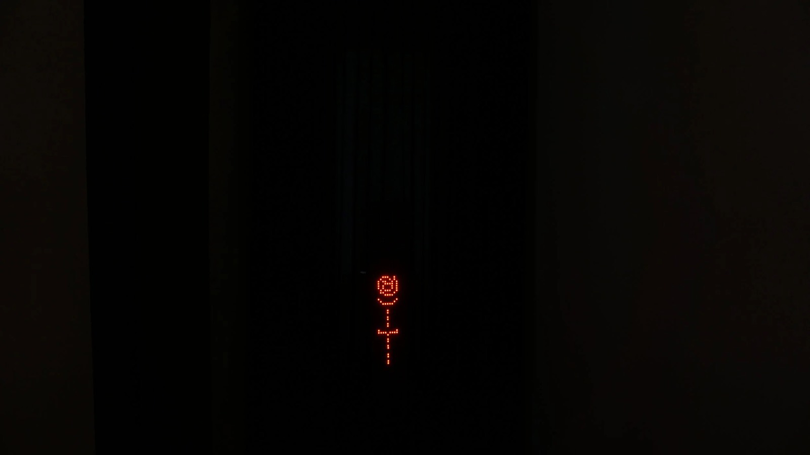
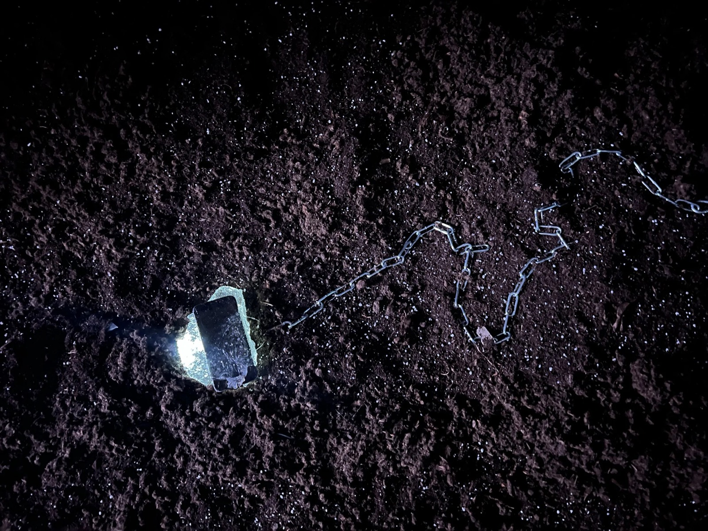
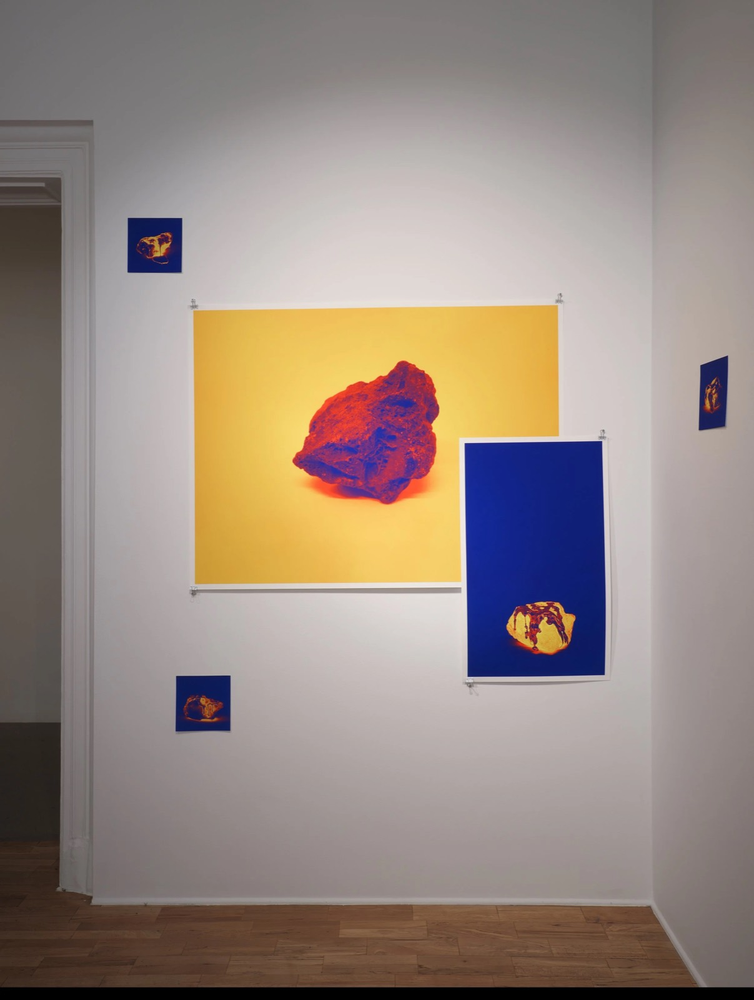
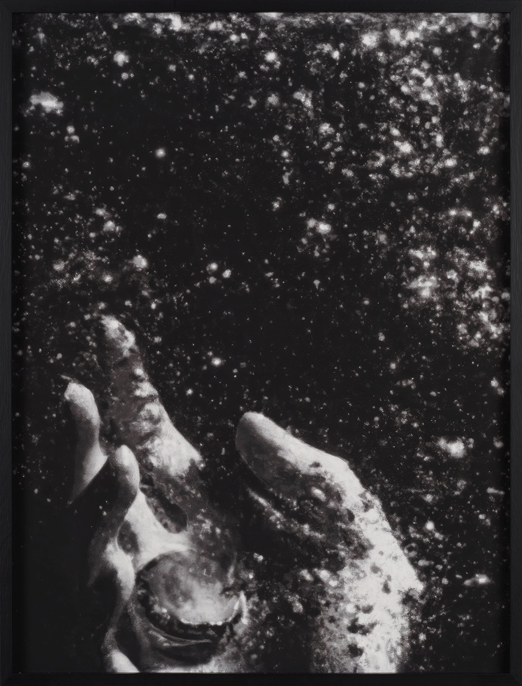
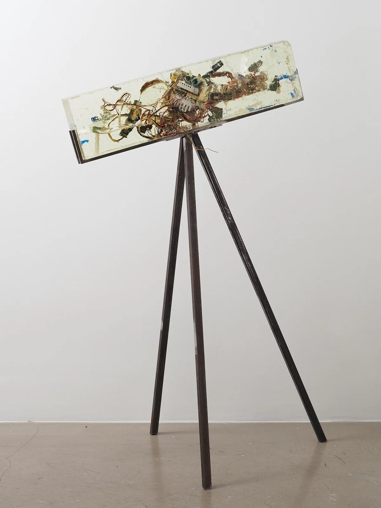

2023 · Exhibition (solo), Installation, Video · Versus Art Project, Istanbul
all familiar, all foreign (her şey tanıdık, her şey yabancı)
First solo exhibition in Istanbul, combining photography, video, sculpture and text into a speculative archaeological site on digital footprints, algorithmic divinities and power and technology.
- No.
- 2301
- Date/s
- 2023
- Type/s
- Exhibition (solo), Installation, Video
- For
- Versus Art Project
- With
- Ulya Soley
- Place
- Versus Art Project, Istanbul
- Status
- realised
- Shown
- all familiar, all foreign, Versus Art Project, Istanbul, 21.03.—30.04.2023
- Shown
- all familiar, all foreign (re-staging), TOP e.V., Berlin, 11.2023
- Links
- original ↗ · press ↗








Press
- 2023-05-04Burcu Çimen review ↗Sanat Dünyamız
- 2023-05-02Burcu Dimili review ↗TheMagger
- 2023-04-26Oğuz Karayemiş essay ↗Unlimited Magazine
- 2023-04-26Nil Has review ↗Sanat Okur
- 2023-04-26Elif Hopyar interview ↗Nouvart
- 2023-04-20Işıl Aydemir review ↗Artful Living
- 2023-04-16Sanat Dedikleri Tuhaf Şey podcast ↗Sinan Eren Erk (podcast)
- 2023-04-08Ceren Kahveci interview ↗Calling Mag
- 2023-03-31all familiar, all foreign (exhibition review) ↗Gazete Oksijen
- 2023-03-21all familiar, all foreign ↗Istanbul Architecture Diary
- 2023-03-21all familiar, all foreign ↗Cornucopia
- 2023-03Yelta Köm kurgusuyla geleceğe dair arkeolojik bir alan ↗Bant Mag
- 2023-03AJANDA: Yelta Köm | her şey tanıdık, her şey yabancı ↗Studio Mercado
- 2023Art Exploration of the Month: "her şey tanıdık, her şey yabancı" (all familiar, all foreign) ↗Hitit Seramik